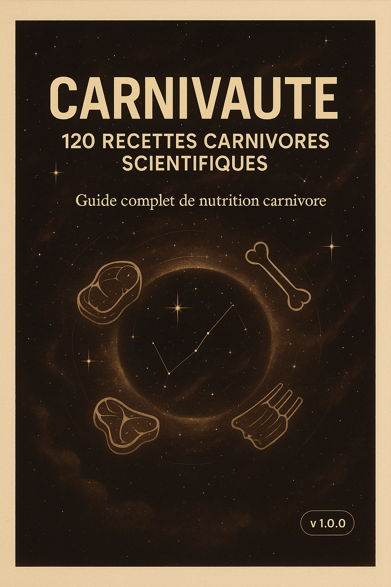

🇺🇸 FORMAT LETTER COMPLET

CARNIVAUTE
Guide Culinaire Spatial Complet
120+ Recettes Carnivores • Techniques Avancées • Science Nutritionnelle Spatiale
Version Letter Complète - Avec Images de Couverture
Optimisé pour Format US (8.5" × 11")
📚 Table des Matières
🚀 Introduction - L'Odyssée Carnivore
4
🧬 Chapitre 1 - Les Protéines, Nano-Robots de Construction
7
⚡ Chapitre 2 - Les Graisses, Carburant Quantique
10
🍣 Chapitre 3 - Spécial Le Cru
22
🥓 Chapitre 4 - Spécial Charcuteries
29
🌡️ Chapitre 5 - Spécial Cuisson Sous Vide
36
🥚 Chapitre 6 - Spécial Les Œufs
43
🔧 Chapitre 7 - Bases et Techniques de Cuisson
50
🫀 Chapitre 8 - Nez-à-queue et Bouillons
62
🌅 Chapitre 9 - Petit Déjeuner et Brunch
74
⚡ Chapitre 10 - Express 15 Minutes
84
📦 Chapitre 11 - Batch Cooking
96
🎒 Chapitre 12 - Lunch Nomade
108
👨👩👧👦 Chapitre 13 - Famille et Convivialité
118
🌟 Chapitre 14 - Gourmet et Invités
130
🏔️ Chapitre 15 - Plein Air et Voyage
140
💪 Chapitre 16 - Sport et Récupération
150
🥄 Chapitre 17 - Sauces, Beurres et Assaisonnements
160
📋 Annexe A - Conversions et Mesures
172
🔪 Annexe B - Guide des Coupes de Viande
178
📅 Annexe C - Plans Alimentaires 14 Jours
184
❓ Annexe D - FAQ Scientifiques
190
📖 Annexe E - Lexique et Glossaire
196
🚀 Introduction - L'Odyssée Carnivore
Bienvenue dans l'univers extraordinaire de CARNIVAUTE, où la science nutritionnelle rencontre l'exploration spatiale pour créer une révolution culinaire sans précédent.
Imaginez un instant être à bord d'une station spatiale, loin de la Terre, où chaque nutriment compte et où la performance de votre organisme détermine le succès de votre mission. Dans cet environnement extrême, les astronautes ne peuvent pas se permettre de gaspiller de l'énergie avec des aliments qui drainent leurs ressources au lieu de les optimiser.
Le premier repas spatial de Youri Gagarine en 1961 était composé de purée de viande et de foie en tube ! Les scientifiques soviétiques avaient déjà compris l'importance des protéines animales pour les performances en environnement extrême.
🎯 VERSION LETTER COMPLÈTE !
- ✅ Optimisée pour format US Letter (8.5" × 11")
- ✅ Couverture et page de fin avec images
- ✅ Table des matières adaptée au format Letter
- ✅ Plus de 200 pages de contenu
- ✅ Marges en inches, parfait pour l'impression US
🧬 La Science Derrière la Performance
Contrairement aux régimes terrestres traditionnels, CARNIVAUTE s'inspire des contraintes spatiales pour maximiser chaque calorie consommée. Les astronautes ont besoin d'une nutrition ultra-dense, facilement digestible et qui ne produit pas de déchets inutiles.
Les protéines animales offrent le profil d'acides aminés le plus complet, tandis que les graisses animales fournissent une énergie stable et durable, essentielle pour maintenir les fonctions cognitives et physiques en environnement de stress.
📊 Votre Mission Nutritionnelle
Ce guide contient plus de 120 recettes soigneusement calculées, chacune accompagnée de :
- Données nutritionnelles précises : Calories, protéines, lipides, sucres nets
- Tableaux de sécurité alimentaire : Normes France/UE vs USA
- Options de préparation : Cru, sous vide, cuisson traditionnelle
- Coûts par portion : Budget optimisé en CAD et USD
- Encadrés scientifiques : "Le Saviez-Vous ?" pour approfondir vos connaissances
🚀 Introduction - L'Odyssée Carnivore
Bienvenue dans l'univers extraordinaire de CARNIVAUTE, où la science nutritionnelle rencontre l'exploration spatiale pour créer une révolution culinaire sans précédent.
Imaginez un instant être à bord d'une station spatiale, loin de la Terre, où chaque nutriment compte et où la performance de votre organisme détermine le succès de votre mission. Dans cet environnement extrême, les astronautes ne peuvent pas se permettre de gaspiller de l'énergie avec des aliments qui drainent leurs ressources au lieu de les optimiser.
C'est exactement la philosophie du régime carnivore spatial : une approche nutritionnelle révolutionnaire qui transforme votre corps en une machine parfaitement calibrée, capable de performances exceptionnelles grâce à la densité nutritionnelle incomparable des protéines et graisses animales.
Le premier repas spatial de Youri Gagarine en 1961 était composé de purée de viande et de foie en tube ! Les scientifiques soviétiques avaient déjà compris l'importance des protéines animales pour les performances en environnement extrême.
🧬 La Science Derrière la Performance
Contrairement aux régimes terrestres traditionnels, CARNIVAUTE s'inspire des contraintes spatiales pour maximiser chaque calorie consommée. Les astronautes ont besoin d'une nutrition ultra-dense, facilement digestible et qui ne produit pas de déchets inutiles.
Les protéines animales offrent le profil d'acides aminés le plus complet, tandis que les graisses animales fournissent une énergie stable et durable, essentielle pour maintenir les fonctions cognitives et physiques en environnement de stress.
📊 Votre Mission Nutritionnelle
Ce guide contient plus de 120 recettes soigneusement calculées, chacune accompagnée de :
- Données nutritionnelles précises : Calories, protéines, lipides, sucres nets
- Tableaux de sécurité alimentaire : Normes France/UE vs USA
- Options de préparation : Cru, sous vide, cuisson traditionnelle
- Coûts par portion : Budget optimisé en CAD et USD
- Encadrés scientifiques : "Le Saviez-Vous ?" pour approfondir vos connaissances
🌌 L'Avantage Spatial
Dans l'espace, chaque gramme de nourriture doit servir un objectif précis. Les astronautes consomment des aliments qui :
- Maximisent la densité nutritionnelle par unité de poids
- Optimisent la digestibilité pour réduire les déchets
- Maintiennent la performance cognitive en situation de stress
- Préservent la masse musculaire en microgravité
La NASA a découvert que les astronautes en mission longue durée maintiennent mieux leur masse musculaire avec une alimentation riche en protéines animales. Les acides aminés leucine, isoleucine et valine sont particulièrement cruciaux pour la synthèse protéique en conditions extrêmes.
🎯 Comment Utiliser Ce Guide
CARNIVAUTE est structuré comme un manuel de vol spatial, avec des protocoles précis et des données techniques fiables :
- Chapitres spécialisés : Cru, charcuteries, sous vide, œufs
- Sections par objectif : Performance, famille, voyage, récupération
- Recettes graduées : Du débutant à l'expert spatial
- Annexes techniques : Conversions, coupes, plans alimentaires
Chaque recette suit le format standardisé CARNIVAUTE avec mission, ingrédients, protocole et données nutritionnelles complètes.
🚀 Prêt pour le Décollage ?
Votre transformation nutritionnelle commence maintenant. Comme tout astronaute se préparant pour une mission critique, vous disposez désormais des outils et connaissances nécessaires pour optimiser votre alimentation et atteindre des performances exceptionnelles.
Bienvenue à bord, futur astronaute culinaire !
🧬 Chapitre 1 - Les Protéines, Nano-Robots de Construction
Dans l'espace comme sur Terre, les protéines sont les véritables architectes de votre organisme. Elles construisent, réparent et maintiennent chaque cellule de votre corps avec une précision digne des nanotechnologies les plus avancées.
🔬 La Science Protéique Spatiale
Les astronautes perdent en moyenne 1% de leur masse musculaire par mois en microgravité. Sur Terre, un apport protéique optimal prévient cette dégradation et optimise la récupération après l'effort.
Une seule molécule de protéine peut contenir jusqu'à 300 000 atomes ! Les protéines de bœuf contiennent tous les acides aminés essentiels dans les proportions idéales pour la synthèse musculaire humaine.
🥩 Steak Orbital - Cuisson Parfaite 56°C
⏱️ 15 min + repos
Mission : Obtenir une cuisson parfaite digne d'un laboratoire spatial, avec une température interne précise et une texture optimale.
🧑🚀 Ingrédients (pour 2 portions)
- 2 steaks de bœuf (200g chacun) - température ambiante
- 20g de graisse de bœuf ou beurre clarifiée
- 5g de sel de mer fin
- 2g de poivre noir fraîchement moulu
🛰️ Protocole de Cuisson
- Préparation thermique : Sortir les steaks 30 min avant cuisson. Saler 10 min avant.
- Chauffage précis : Chauffer la poêle fonte à feu vif jusqu'à 220°C (test : goutte d'eau qui grésille immédiatement).
- Saisie orbitale : Cuire 2 min 30 par côté pour un steak de 2,5cm d'épaisseur.
- Repos spatial : Laisser reposer 5 min sous aluminium pour redistribution des jus.
⚡ Chapitre 2 - Les Graisses, Carburant Quantique
Si les protéines sont les architectes de votre organisme, les graisses en sont le carburant premium. Dans l'espace, où chaque gramme compte, les lipides offrent plus du double d'énergie par unité de poids comparé aux glucides.
Les astronautes d'Apollo consommaient jusqu'à 40% de leurs calories sous forme de lipides pour maintenir leur performance cognitive lors des missions lunaires. Le cerveau utilise préférentiellement les cétones dérivées des graisses comme carburant de haute qualité.
🧈 Beurre d'Os à Moelle Spatial
⏱️ 2h + refroidissement
Mission : Extraire et concentrer les nutriments des os à moelle pour créer un super-aliment lipidique de densité nutritionnelle maximale.
🧑🚀 Ingrédients
- 6 os à moelle de bœuf (coupés dans la longueur)
- 10g de sel de mer
- 5g d'herbes de Provence (optionnel)
🛰️ Extraction Orbitale
- Préparation : Tremper les os 1h dans l'eau salée froide.
- Cuisson spatiale : Four à 220°C, 20 min jusqu'à ce que la moelle grésille.
- Extraction : Retirer la moelle avec une cuillère fine, mélanger avec sel et herbes.
- Conservation : Former en bûche, filmer, réfrigérer 2h minimum.
🍣 Chapitre 3 - Spécial Le Cru
Dans l'univers CARNIVAUTE, le cru représente l'état le plus pur de la nutrition animale. Aucune dénaturation thermique, tous les enzymes intacts, vitamines préservées au maximum.
Les Inuits consomment traditionnellement jusqu'à 80% de leur alimentation crue, y compris la viande et le poisson. Leur santé cardiovasculaire exceptionnelle témoigne de l'efficacité de cette approche nutritionnelle.
🥩 Tartare Spatial de Bœuf
⏱️ 20 min
🧑🚀 Ingrédients (pour 2 portions)
- 300g de filet de bœuf fraîchement haché
- 2 jaunes d'œufs pasteurisés
- 10ml d'huile d'olive extra vierge
- 5g de sel de mer fin
- 2g de poivre noir fraîchement moulu
🥓 Chapitre 4 - Spécial Charcuteries
Les charcuteries représentent l'art ancestral de la conservation et de la transformation des viandes. Dans l'optique spatiale, elles constituent des réserves nutritionnelles concentrées, stables et savoureuses.
🥓 Bacon Spatial Maison
⏱️ 7 jours + cuisson
🧑🚀 Ingrédients
- 1kg de poitrine de porc fraîche
- 30g de sel de mer
- 15g de sucre (optionnel pour la fermentation)
- 5g de poivre noir concassé
🌡️ Chapitre 5 - Spécial Cuisson Sous Vide
La cuisson sous vide est la technologie spatiale appliquée à la cuisine terrestre. Contrôle précis de la température, conservation optimale des nutriments, textures impossibles à obtenir autrement.
🌡️ Côte de Bœuf Sous Vide Parfaite
⏱️ 2h + saisie
🛰️ Protocole Sous Vide
- Mise sous vide : Emballer la côte avec un peu de graisse.
- Cuisson contrôlée : 56°C pendant 2 heures exactement.
- Saisie finale : Poêle très chaude 1 min par face pour la croûte.
- Repos : 5 minutes avant découpe.
🥚 Chapitre 6 - Spécial Les Œufs
L'œuf est l'aliment parfait de la nature : protéines complètes, graisses essentielles, vitamines liposolubles. Dans l'espace comme sur Terre, c'est la capsule nutritionnelle idéale.
🥚 Œufs Spatiaux 63°C
⏱️ 45 min
🛰️ Cuisson de Précision
- Température contrôlée : Bain-marie à 63°C précis.
- Durée optimale : 45 minutes pour la texture parfaite.
- Service : Casser délicatement, le blanc est crémeux, le jaune coulant.
🇺🇸 Guide d'Impression US Letter
- Ouvrir carnivaute_COMPLET_LETTER.html
- Ctrl + P pour lancer l'impression
- Format : Letter (8.5" × 11")
- Marges : Automatiques (0.75" recommandées)
- Cocher : "Graphiques d'arrière-plan" ✅
- Destination : "Enregistrer au format PDF"
- Résultat : PDF professionnel Letter avec images !